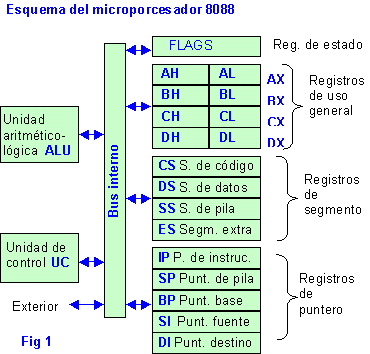

La Unidad de Procesamiento (CPU) controla el funcionamiento del
computador y lleva a cabo sus funciones de procesamiento de datos.
Frecuentemente se le llama procesador. Un procesador, incluye tanto
registros visibles por el usuario como registros de control/estado.
2.2 Estructura de Registros
¿Qué es?
Un registro es una memoria que esta ubicada en el procesador y se
encuentra en el nivel más alto en la jerarquía de memoria, por lo
tanto tiene una alta velocidad pero con poca capacidad para
almacenar datos que va desde los 4 bits hasta los 64 bits
dependiendo del procesador que se utilice. Los datos que almacena
son los que se usan frecuentemente.
2.2.1 Registros visibles para el usuario.
¿Qué es?
Un registro visible al usuario es aquél que puede ser referenciado
por medio del lenguaje máquina que ejecuta la CPU.
Permiten al programador de lenguaje máquina o de ensamblador
minimizar las referencias a memoria principal por medio de la
optimización del uso de registros.
Clasificación
Uso General.
Datos.
Direcciones.
Códigos de Condición.
Índice.
Segmento.
Apuntadores.
Banderas.
Instrucción.
Control y Estado.
2.2.2 Registros de control y de estados.
Son utilizados por la unidad de control para controlar el
funcionamiento del procesador y por programas privilegiados del
sistema operativo para controlar la ejecución de programas. Hay
diversos registros del procesador que se emplean para controlar su
funcionamiento.
2.2.3 Ejemplo de Registros de CPU reales.

2.3 El ciclo de instrucción
¿Qué es?
Es también llamado ciclo de fetch-and-execute o ciclo de
fetchdecode-execute es el período que tarda la unidad central de
proceso (CPU) en ejecutar una instrucción de lenguaje máquina. Cada
instrucción del juego de instrucciones de una CPU puede requerir
diferente número de ciclos de instrucción para su ejecución. Un
ciclo de instrucción está formado por uno o más ciclos máquina.
2.3.1 Ciclo FETCH - DECODE - EXECUTE
1. BUSCAR LA INSTRUCCIÓN EN LA MEMORIA PRINCIPAL
La CPU pasa la instrucción de la memoria principal a través
del bus de datos al Registro de Datos de Memoria (MDR).
El valor del MDR es colocado en el Registro de Instrucción
Actual (CIR), un circuito que guarda la instrucción
temporalmente de manera que pueda ser decodificada y
ejecutada.
2. DECODIFICAR LA INSTRUCCIÓN
El decodificador de instrucción interpreta e implementa la
instrucción.
El registro de instrucción (IR) mantiene la instrucción en
curso mientras el contador de programa (PC, program counter)
guarda la dirección de memoria de la siguiente instrucción a
ser ejecutada.
Se lee la dirección efectiva de la memoria principal si la
instrucción tiene una dirección indirecta.
3. EJECUTAR LA INSTRUCCIÓN
A partir del registro de instrucción, los datos que forman la
instrucción son decodificados por la unidad de control.
Ésta interpreta la información como una secuencia de señales
de control que son enviadas a las unidades funcionales
relevantes de la CPU para realizar la operación requerida por
la instrucción.
4. ALMACENAR O GUARDAR RESULTADOS
El resultado generado por la operación es almacenado en la
memoria principal o enviado a un dispositivo de salida
dependiendo de la instrucción.
Basándose en los resultados de la operación, el contador de
programa se incrementa para apuntar a la siguiente instrucción
o se actualiza con una dirección diferente.
2.3.2 Segmentación de instrucciones.
Es una técnica que permite implementar el paralelismo a nivel de
instrucción en un único procesador. La segmentación intenta
tener ocupadas con instrucciones todas las partes del
procesador, dividiendo las instrucciones en una serie de pasos
secuenciales que efectuarán distintas unidades de la CPU,
tratando en paralelo diferentes partes de las instrucciones.
Permite una mayor tasa de transferencia efectiva por parte de la
CPU .
El número de pasos dependientes varían según la arquitectura de
la máquina. •La segmentación RISC clásica comprende:
1. Lectura de instrucción
2. Decodificación de instrucción y lectura de registro
3. Ejecución
4. Acceso a memoria
5. Escritura de vuelta en el registro
Conforme la segmentación se hace más "profunda" (aumentando el
número de pasos dependientes), un paso determinado puede
implementarse con circuitería más simple, lo cual puede permitir
que el reloj del procesador vaya más rápido. En inglés, las
segmentaciones de este tipo pueden llamarse superpipelines. Se
dice que un procesador está totalmente segmentado si puede leer
una instrucción en cada ciclo. Por lo tanto, si ciertas
instrucciones o condiciones requieren un retardo que impide la
lectura de nuevas instrucciones, el procesador no está
totalmente segmentado.
2.3.3 Conjunto de Instrucciones, características y funciones.
El conjunto de instrucciones de un computador debe ser completo en
el sentido de que se pueda construir un programa para evaluar una
función computable usando una cantidad de memoria razonable y
empleando un tiempo moderado, es decir, el número de instrucciones
de ese programa no debe ser demasiado elevado.
qLos juegos de instrucciones también tienen que ser eficientes,
esto significa que las funciones más necesarias deben poder
realizarse usando pocas instrucciones.
qEl conjunto de instrucciones de una máquina debe ser regular, es
decir debe ser simétrico (por ejemplo, si existe una instrucción
de desplazamiento a la izquierda, debe haber otra de
desplazamiento a la derecha, etc.) y ortogonal, es decir, deben
poder combinarse, en la medida de lo posible, todos las
operaciones con todos los tipos de datos y modos de
direccionamiento.
En muchas ocasiones, también se le debe exigir a un computador que
su juego de instrucciones sea compatible con modelos anteriores.
2.3.4 Modos de direccionamiento.
Son las diferentes maneras de especificar un operando dentro de una
instrucción. Un modo de direccionamiento especifica la forma de
calcular la dirección de memoria efectiva de un operando mediante el
uso de la información contenida en registros dentro de una
instrucción de la máquina.
2.4 Casos de estudio de CPU reales
En informática, los modos de direccionamiento son las diferentes
maneras de especificar un operando dentro de una instrucción en
lenguaje ensamblador. Un modo de direccionamiento especifica la
forma de calcular la dirección de memoria efectiva de un operando
mediante el uso de la información contenida en registros y/o
constantes, contenida dentro de una instrucción de la máquina o en
otra parte. No existe una forma generalmente aceptada de nombrar a
los distintos modos de direccionamiento. En particular, los
distintos autores y fabricantes de equipos pueden dar nombres
diferentes para el modo de hacer frente al mismo, o los mismos
nombres, a los diferentes modos de direccionamiento. Además, un modo
de direccionamiento que en una determinada arquitectura se trata
como un modo de direccionamiento, puede representar la funcionalidad
que en otra arquitectura está cubierto por dos o más modos de
direccionamiento.